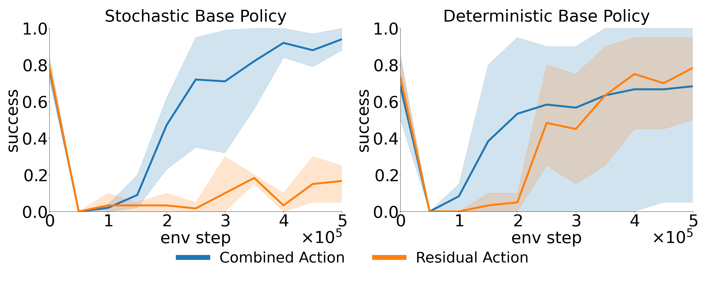
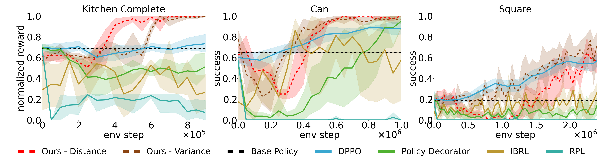
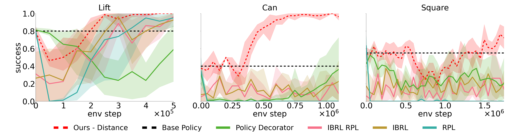

TLDR : Residual RL is a powerful strategy for adapting a pretrained base policy to new environments but standard Residual RL struggles with uncontrolled exploration and stochastic base policies. We propose two improvements to Residual RL that leverage uncertainty estimation to contain exploration and introduce an asymmetric actor-critic algorithm for off-policy learning.
✨ Constraining Exploration
Our first idea is to control the exploration around base policy using uncertainty estimation :
✅ Let it act autonomously when certain
⚡ Activate the residual only when needed

✨ Residual RL for stochastic base policies
We optimize the Residual RL algorithm for stochastic policies using an asymmetric actor critic approach
where we learn the critic for the combined action (i.e. base action + residual action) and the actor for
only the residual action.
Our findings reveal that using this architecture yields significant performance improvement for stochastic
base policies but both architectures work for deterministic base policies.

Experiments
We conduct experiments with two kinds of uncertainty metrics (distance-to-data and ensemble variance) with both Gaussian mixture model and diffusion based base policies across multiple tasks and environments. We notice strong performance of our method over direct finetuning methods and other Residual RL methods
Diffusion base policy :

GMM base policy :

Sim-to-Real-Transfer
We also evaluate the learned policies in real world using sim-to-real transfer.
BibTeX
@ARTICLE{11267054,
author={Dodeja, Lakshita and Schmeckpeper, Karl and Vats, Shivam and Weng, Thomas and Jia, Mingxi and Konidaris, George and Tellex, Stefanie},
journal={IEEE Robotics and Automation Letters},
title={Accelerating Residual Reinforcement Learning With Uncertainty Estimation},
year={2026},
volume={11},
number={1},
pages={970-977},
keywords={Uncertainty;Stochastic processes;Reinforcement learning;Imitation learning;Training;Robustness;Tuning;Transforms;Training data;Robot control;Reinforcement learning (RL);deep learning methods;machine learning for robot control},
doi={10.1109/LRA.2025.3636808}}